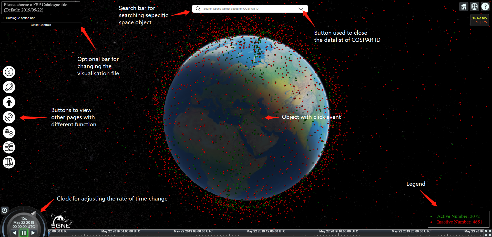
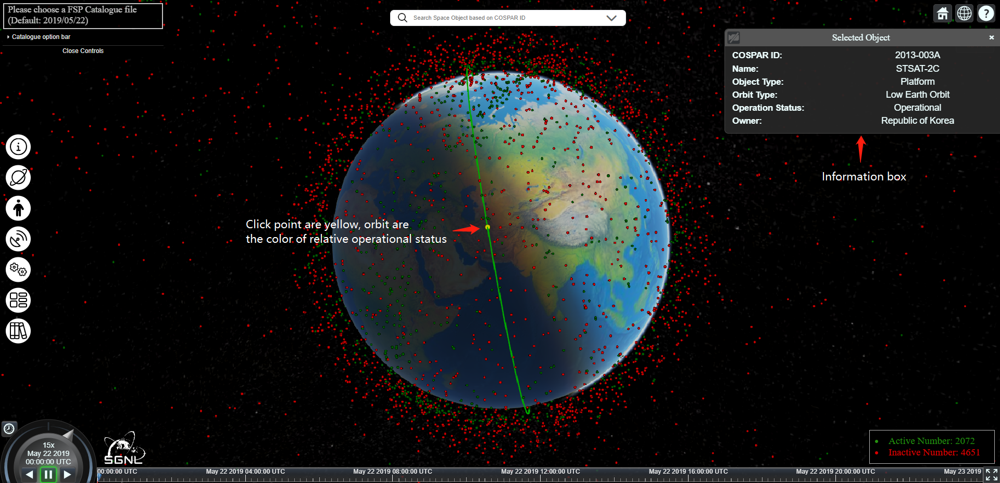
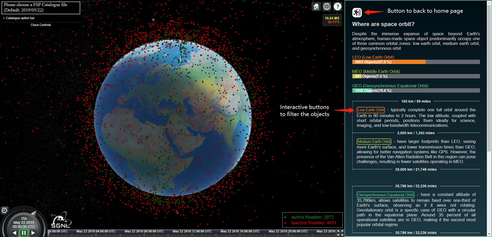
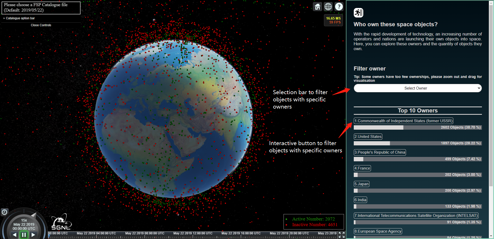
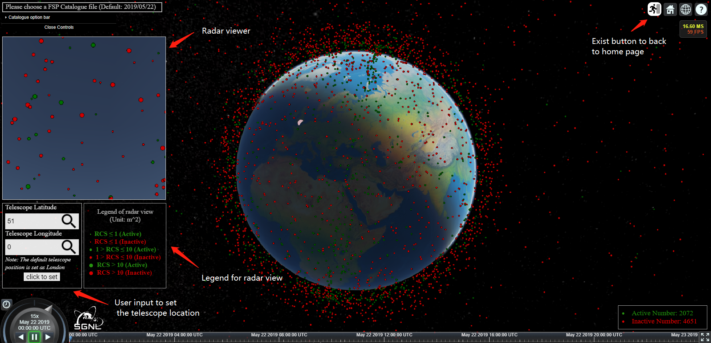
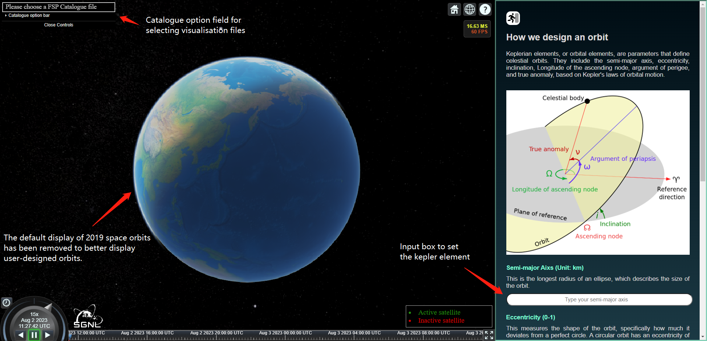
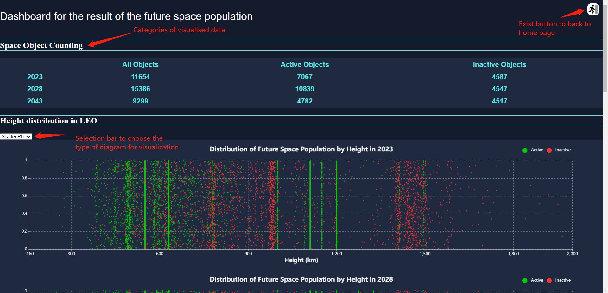
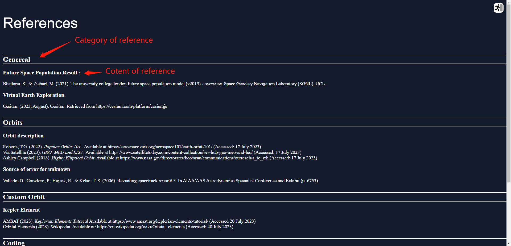

User Guideline

Home page
The top left corner of the Home page is the selection bar for the FSP file, which is loaded on 22 May 2019 by
default.
In the middle of the left side is a series of buttons to jump to different pages, from top to bottom they are
(User Guideline, Orbits, Owner, Radar, Custom Orbit, Dashboard and Reference).
The lower left hand side is always used to display the time of the visualisation and the acceleration factor of
the time change.
Above the middle is the input field, which can be used to HIGHLIGHT a specific OBJECT based on the COSPAR ID
entered, the user will expand the datalist to help with the input as they enter it, and closing the datalist can
be closed by clicking on the Expand button to the right of the input box.
The bottom right corner is the legend, which indicates the meaning of the colour of the dots and shows the
corresponding quantity.
All dots have a click event, when clicked they will be highlighted and a corresponding track will be drawn.

Click event
After clicking or entering a specific COSPAR ID in the input box and enter, the screen will automatically
highlight (make larger, mark yellow) the corresponding object and draw a orbit based on the operational status.

Orbits
The display box on the right is an interactive information bar with an exit button at the top left and bottom
left of the bar. The box corresponding to the orbit is an interactive button that, when clicked, filters out all
objects on the corresponding orbit

Owners
The right side of the owner is also an interactive information bar, except that there is an additional selection
bar that contains all the owners, which will filter out all the matching objects after they have been selected.

Radar
Radar sits with an additional square window for displaying the obejct status above the corresponding telescope
location.
Below the radar window are two boxes corresponding to an input box for the user to enter the telescope location,
and a legend for the radar window.
The button to return to the home page is at the top right of the screen.

Custom Orbit
For the clear presentation of user-defined orbits, the Custom orbit page does not automatically load the default
file (2019/5/22).
The right side is still an interactive information bar that displays the kepler element definition while
allowing the user to enter their own kepler element and draw the orbit.
If you want to add FSP file results for combined comparison, you can select a specific file from the file
selection bar in the upper left corner of the screen

Dashboard
Instead of loading cesium earth, the Dashboard will only show the graphs. The file is not needed and
automatically loads the model results for 2023, 2028 and 2043.
There will be a chart category selection box under each major data category, which will allow you to define the
type of chart.
The buttons to return to the home page are distributed in the upper and lower right of the page.

Reference
